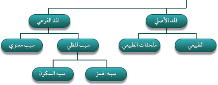
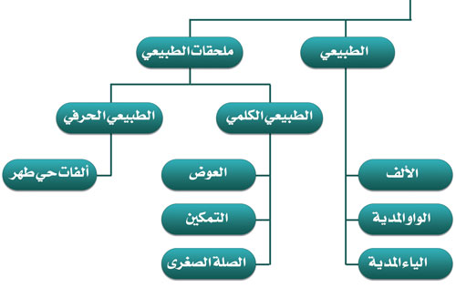
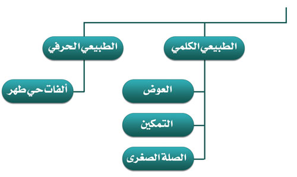
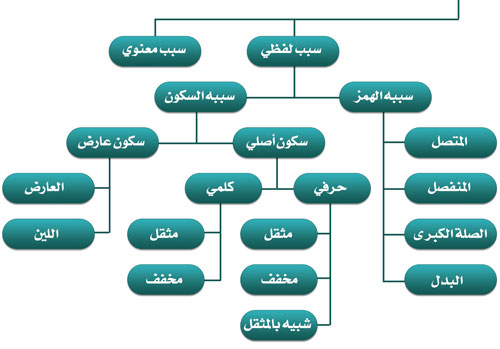
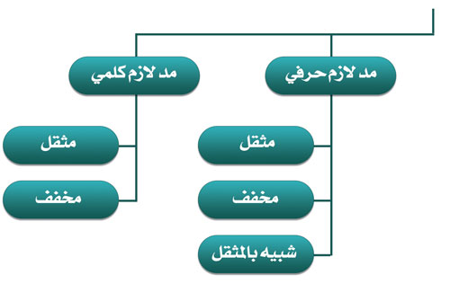

المد لغةً: الزيادة، واصطلاحًا: إطالة الصوت بأحد حروف المد الثلاثة أو أحد حرفي اللين عند وجود سبب من أسباب المد؛ وضده القصر وهو لغةً: الحبس والمنع، واصطلاحًا: إثبات حرف المد أو اللين من غير زيادة فيه لعدم وجود السبب، ومن أدلته: "سألت أنس بن مالك عن قراءة النَّبِيِّ صَلَّى اللَّهُ عَلَيْهِ وَسَلَّمَ فَقَالَ: كَانَ يمد مدا" [البخاري: 4758].
حروف المد ثلاثة، ويطلق عليها حروف مد ولين، وسيطلق عليها في هذا الكتاب حروف المد لمنع اللبس، وهي:الألف ولا تكون إلا ساكنة ولا يكون قبلها إلا مفتوحًا، والواو الساكنة المضموم ما قبلها، و الياء الساكنة المكسور ما قبلها.
حروف اللين اثنان، وهما: الواو الساكنة المفتوح ما قبلها، والياء الساكنة المفتوح ما قبلها لوجود سبب من أسباب المد.
تنبيهات:
قال عثمان مراد في السلسبيل الشافي:
وعَـرِّفِ المَـدَّ بهذا الحَـدِّ
إطالةُ الصَّوْتِ بحَرْفِ المَدِّ
حُروفُـهُ واوٌ ويـا وألفُ
سَكَنَّ عَنْ جِنْـسٍ كَفا وَفِي وَفُو
واللِّينُ منها اليا وواوٌ سَكَنا
مِن بَعْدِ فَتْحٍ نَحوُ كَيْفَ قَوْلُنَا
وقال الجمزوري في تحفة الأطفال:
حُرُوفُهُ ثَلاَثَةٌ فَعِيهَـا
في لَفْظِ وَايٍ وَهْيَ فِـي نُوحِيهَا
وَالكَسْـرُ قَبْلَ الْيَا وَقَبْلَ الْواوِ ضَمْ
شَـرْطٌ وَفَتْحٌ قَبْلَ أَلْفٍ يُلْتَزَمْ
وَاللِّينُ مِنْهَا الْيَا وَوَاوٌ سُكِّنَا
إِنِ انْفِتَـاحٌ قَبْلَ كُـلٍّ أُعْلِنَا

قال عثمان مراد في السلسبيل الشافي:
والمدُّ قُـلْ أسبابُـهُ شَيْئانِ
هَمْزٌ سُكُـونٌ ولَـهُ قِسْمانِ
أَصلِيْ إذا المَـدُّ خَلا عَنِ السَّبَبْ
فَرعِيْ إذا بواحـدٍ منهُ اصطحبْ
وقال الجمزوري في تحفة الأطفال:
وَالمَـدُّ أَصْلِـيٌّ وفَرْعِيٌّ لَهُ
وَسَـمِّ أَوَّلاً طَبِيعِيًّا وَهُو
مَا لاَ تَوَقُّفٌ لَهُ عَلَى سَبَبْ
وَلا بِدُونِهِ الحُـرُوفُ تُجْتَلَبْ
بلْ أَيُّ حَـرْفٍ غَيْرَ هَمْزٍ أَوْ سُكُونْ
جَا بَعْدَ مَـدٍّ فَالطَّبِيعِيّ يَكُونْ
ينقسم المد حسب حكمه إلى ثلاثة أقسام تعتمد على مدى توافق أو اختلاف الرواة في المد ومقداره على النحو التالي:
قال عثمان مراد في السلسبيل الشافي:
للمَدِّ أحكامٌ ثلاثٌ واجبُ
وجائـزٌ ولازِمٌ فالواجِـبُ
وقال ابن الجزري في المقدمة الجزرية:
وَالـمَدُّ لاَزِمٌ وَوَاجِبٌ أَتَـى
وَجَـائِـزٌ وَهْـوَ وَقَـصْـرٌ ثَـبَـتَا
فَـلاَزِمٌ إِنْ جَـاءَ بَعْـدَ حَـرْفِ مَـدْ
سَـاكِـنُ حَالَـيْـنِ وَبِالـطُّولِ يُـمَـدْ
وَوَاجِبٌ إنْ جَاءَ قَـبْـلَ هَـمْـزَةِ
مُـتَّـصِـلاً إِنْ جُـمِعَا بِـكِـلْـمَـةِ
وَجَـائـزٌ إِذَا أَتَـى مُـنْـفَـصِـلاَ
أَوْ عَـرَضَ السُّكُـونُ وَقْـفًـا مُسْـجَـلاَ
يقاس المد بوحدة تسمي حركة، والحركة هي الزمن اللازم للنطق بالحرف المتحرك سواءً أكانت الحركة فتحة أو ضمة أو كسرة، وهذا مقياس مرن يعتمد على مرتبة التلاوة. ولأئمة القراءة في قياس أزمنة المدود خمسة مقادير هي:

ويسمى أيضاً بالمد الأصلي، والمد الذاتي، ومد الصيغة، ويكون في حروف المد الثلاثة التالية:
قال الطيبي في المفيد في التجويد:
وَأحْرُفُ الْمَدِّ ثَلَاثٌ: الْألَفْ
سُكُونُهَا مِـنْ بَعْدِ فَتْحٍ قَدْ عُرِفْ
وَالْـوَاُو والْيا سَاكِنيَنِ: والْيا
كَسْرًا تَلَتْ، وَالْـوَاُو ضَما وليِا
سبب تسميته:
ضابطه: ألّا يتوقف على سبب كالهمز والسكون؛ وهذا يعني ألّا يقع قبله أو بعده همز وألّا يقع بعده سكون.
أقسامه: المد الطبيعي يوجد في الكلمات والحروف، فينقسم إلى:
حكمه: واجب.
مقداره: حركتان.
يلحق بالمد الطبيعي مدود لم يأت قبلها همز ولا بعدها همز أو سكون ولها أحكام المد الطبيعي وهي:

هو التعويض عن تنوين النصب نحو: ﴿عَلِيمًا﴾ [النساء: 11]، ﴿بِنَآءٗ﴾ [البقرة: 22] حالة الوقف بألف، تمد مداً طبيعياً كلمياً، ويسمى المد: مد عوض.
سبب تسميته: أنه يُعوض عن التنوين بألف عند الوقف على الكلمات التي آخرها تنوين فتح باستثناء تاء التأنيث المربوطة.
ضوابطه:
تنبيهات:
حكمه: واجب.
مقداره: حركتان وقفاً لا وصلاً.
هو تمكين الياء الساكنة التي جاءت في كلمة فيها ياءان متتاليتان الأولى مشددة مكسورة والثانية ساكنة نحو: ﴿حُيِّيتُم﴾ [النساء: 86] من النطق بمد الياء الساكنة مداً طبيعياً كلمياً، ويسمى المد: مد تمكين.
ملحقاته: يُلحق به:
سبب تسميته:
حكمه: واجب.
مقداره: حركتان وصلاً ووقفاً.
وهو وصل هاء الكناية بحرف مد مجانس لحركتها، أي بواو مدية إذا كانت هاء الكناية مضمومة أو ياء مدية إذا كانت مكسورة نحو: ﴿إِنَّهُۥ كَانَ بِعِبَادِهِۦ خَبِيرَۢا بَصِيرٗا﴾ [الإسراء: 30]، يمد مداً طبيعياً كلمياً يسمى: مد صلة صغرى.
سبب تسميته: أن المد يصل هاء الكناية بما بعدها بواو أو ياء مدية.
ضوابطه:
علامته: وضع واو صغيرة بعد الهاء إذا كانت مضمومة نحو: ﴿إِنَّهُۥ كَانَ﴾ ، وياء صغيرة فارسية إذا كانت مكسورة نحو: ﴿بِعِبَادِهِۦ خَبِيرَۢا﴾.
حكمه: واجب.
مقداره: حركتان وصلاً لا وقفاً.
الاستثناءات: يستثنى لحفص ما يلي:
قال عثمان مراد في السلسبيل الشافي:
وهـاءَ مُضْمَرٍ وشِبهٍ وُجِدا
بيْـنَ مُحرَّكَيْـنِ وَصْلاً امدُدا
لكِـنْ مَعًا أَرْجِهْ فأَلْقِهْ سَكِّـنِ
واقصُرْ لَدَى يَرضَهُ فَوقَ المؤْمِنِ
وتُقْصَرُ الهَا عَقِـبَ الإسْكـانِ
في غَيْـرِ يَخْلُدْ فيـهِ في الفُرقانِ
تنبيهات:
يكون في الحروف المقطعة من أوائل بعض السور والمجموعة في عبارة (حي طهر) نحو: ﴿طه﴾ [طه: 1] والحاء في: ﴿حمٓ﴾ [غافر: 1]، فتمد الألف مداً طبيعياً حرفياً يسمى: مد ألفات حي طهر.
سبب تسميته: أن فواتح السور المجموعة في عبارة (حي طهر) تلفظ: (حا يا طا ها را)، وأن المد يتمحور حول الألفات (الحرف الثاني).
ضابطه: أن يكون في حرف من أحد أحرف الهجاء الواقعة في فواتح السور المجموعة في عبارة: (حي طهر).
حكمه: واجب.
مقداره: حركتان وصلاً ووقفاً.
قال عثمان مراد في السلسبيل الشافي:
واقصرْ بِـ رَهْطِ حيِّ كُلَّ حرفِ
وسمِّـهِ مدًّا طَبِيعيْ حَرفِيْ
فائدة: منطوق أي حرف يتكون من ثلاثة أحرف وحروف (حي طهر) منطوقها ينتهي بالهمزة، وكانت العرب تحذف الهمزة تخفيفاً وتنطقها بحرفين فقط دون أن يؤثر ذلك على المعنى، ولهذا لا تمد حروف (حي طهر) زيادة عن الطبيعي لزوال سبب المد (الهمزة).

للمد الفرعي الذي سببه لفظي سبعة أنواع وهي:
للمد الفرعي الذي سببه الهمز أربعة أنواع وهي:
هو أن يأتي بعد حرف المد همز في كلمة واحدة نحو: ﴿سِيَٓٔتۡ﴾ [الملك: 27]، ﴿أُوْلَٰٓئِكَ﴾ [البقرة: 5]، ﴿سَوَآءٌ﴾ [البقرة: 6].
سبب تسميته: سمي بالمتصل لاتصال شرط المد (حرف المد) بسبب المد (الهمز) في كلمة واحدة.
ضابطه: أن يأتي بعد حرف المد همز في كلمة واحدة.
علامته: وضع علامة المد فوق حرف المد الذي في وسط الكلمة نحو: ﴿سَوَآءٌ﴾ [البقرة: 6].
حكمه: واجب وذلك لإجماع الرواة على مده واختلافهم في مقداره.
قال ابن الجزري في الجزرية:
وَوَاجِـبٌ إنْ جَـاءَ قَـبْلَ هَـمْـزَةِ
مُـتَّـصِلاً إِنْ جُـمِـعَـا بِـكِـلْـمَةِ
وقال سليمان الجمزوري في تحفة الأطفال:
فَوَاجِبٌ إِنْ جَاءَ هَمْزٌ بَعْدَ مَدْ
فِي كِلْمَةٍ وَذَا بِمُتَصِلْ يُعَدْ
وقال الطيبي في المفيد في التجويد:
وَقْل وَجَبْ إنِ وَقَـع الهْمَـزُ بِهِ مُتَّصِلَا بكِلمَةٍ
مقداره: مد المتصل بمقدار 4 أو 5 حركات وصلًا ووقفًا ويضاف وجه الـ 6 حركات في الوقف إذا كانت الهمزة متطرفة بالتفصيل التالي:
قال السَّمنَّودي في لآلئ البيان:
أَقْـوَى الْمُـدودِ: لَازٌم فَما اتَّصَلْ فَـعَارِضٌ فَذو انْفِصَالٍ فَبَـدَلْ
وقال عثمان مراد في السلسبيل الشافي:
أَنْ تأتِيَ الهمـزةُ بعدَ حرفِ مَدْ
في كِلْمةٍ مُتَّصِلاً هذا يُعَدْ
وامدُدهُ أَربعًا وخمسًا إنْ تَصِلْ
وخُذهما إذا وقَفْـتَ واستَطِلْ
تنبيهات:
هو أن يأتي بعد حرف المد همز منفصل عنه في كلمة أخرى نحو: ﴿أَلَآ إِنَّهُمۡ﴾ [البقرة: 13]، ﴿إِنَّآ أَنزَلۡنَٰهُ﴾ [يوسف: 2]، ﴿بِمَآ أُنزِلَ﴾ [البقرة: 4].
سبب تسميته: سمي بالمنفصل لانفصال حرف المد عن سبب المد (الهمز).
ضوابطه:
علامته: وضع علامة المد فوق حرف المد الذي في آخر الكلمة الأولى نحو: ﴿إِنَّآ أَنزَلۡنَٰهُ﴾ [يوسف: 2].
أقسامه: يكون المد المنفصل إما منفصلاً انفصالاً حقيقياً أو منفصلاً انفصالاً حكمياً بالتفصيل التالي:
حكمه: جائز وذلك لاختلاف الرواة في مده واختلافهم في مقداره.
قال السَّمنَّودي في لآلئ البيان:
و جَائزِ: إْن يَنفَصـلْ أَوْ إنِ عَليْهِ هَمـزةٌ تقَدَّمَـتْ
وقال الطيبي في المفيد في التجويد:
وَجَاز حَيْثُ انْفَصَلَا
مقداره: يمد المنفصل بمقدار 4 أو 5 حركات وصلاً لا وقفاً والمقدم في الأداء مده أربع حركات من طريق الشاطبية على التفصيل التالي:
قال عثمان مراد في السلسبيل الشافي:
أَنْ تَأتِيَ الهمـزةُ بعدَ المَدِّ
في كِلْمَتيْـنِ كإلى أشَـدِّ
وجازَ فيهِ من طريـقِ الشَّاطِبـِيْ
أربعَةٌ وخمسَـةٌ يا صاحِبيْ
تنبيهات:
هو وصل هاء الكناية إذا جاء بعدها همز في كلمتين بحرف مد مجانس لحركتها، أي بواو مدية إذا كانت هاء الكناية مضمومة نحو: ﴿عَهۡدَهُۥٓۖ أَمۡ﴾ ، أو ياء مدية إذا كانت مكسورة نحو: ﴿بِهِۦٓ أَن﴾ [البقرة: 27].
سبب تسميته: أن المد يصل هاء الكناية بالهمزة التي بعدها بواو أو ياء مدية.
ضوابطه:
علامته: وضع واو صغيرة فوقها علامة مد بعد الهاء إذا كانت مضمومة نحو: ﴿إِنَّهُۥٓ أَنَا﴾ [النمل: 9]، أو ياء صغيرة فارسية فوقها علامة مد إذا كانت مكسورة نحو: ﴿أَهۡلِهِۦٓ إِلَّآ﴾ [النساء: 92].
حكمه: جائز وذلك لاختلاف الرواة في مده واختلافهم في مقداره.
مقداره: تمد الصلة الكبرى كالمنفصل بمقدار 4 أو 5 حركات وصلاً لا وقفاً، والمقدم في الأداء مدها أربع حركات من طريق الشاطبية على التفصيل التالي:
تنبيهات:
هو أن تتقدم الهمزة على حرف المد في كلمة واحدة على ألا يكون بعد حرف المد همز أو سكون نحو: ﴿ءَامَنُواْۡ﴾ [البقرة: 9]، ﴿أُوتُواْ﴾ [البقرة: 101]، ﴿إِيمَٰنُكُمۡ﴾ [البقرة: 93].
سببه: مد البدل هو عبارة عن همزتين: الأولى متحركة، والثانية ساكنة نحو: (ءَاْ)، (أُوْ)، (إِيْ)؛ والعرب لا تقول (أَأْ)، ولا (إِأْ)، ولا (أُأْ) فهم لا يجمعون في كلامهم بين همزتين الأولى متحركة والثانية ساكنة، بل يبدلون الهمزة الثانية حرف مدِّ مجانس لحركة الهمزة الأولى، فإذا كانت الأولى مفتوحة أبدلوها ألفاً مدِّية (ءَا)، وإذا كانت مضمومة أبدلوها واواً مدِّية (أُو)، وإذا كانت مكسورة أبدلوها ياءً مدِّية (إِي).
سبب تسميته: لأن حرف المدِّ فيه مبدل عن الهمز غالباً، إذ أن الأصل في كل بدل هو اجتماع همزتين في كلمة واحدة: الأولى متحركة والثانية ساكنة، فتبدل الثانية الساكنة حرف مد مجانس لحركة الأولى تخفيفاً نحو ﴿ءَادَمَ﴾ ، ﴿ءَامَنُواْ﴾ وما شابهها.
ملحقاته:
ضوابطه:
حكمه: جائز وذلك لاختلاف الرواة في مده واختلافهم في مقداره.
مقداره: حركتان عند حفص.
قال عثمان مراد في السلسبيل الشافي:
وإِنْ يكُنْ تقـدُّمُ الهمزِ علَـى
مَـدِّ كآمنوا فَسمِّ بَدَلا
واقصرهُ إِن لَّم يأتِ بَعـدَهُ سَبَبْ
وإِنْ أَتَى فاعملْ بذلك السبَبْ
تنبيهات:
للمد الفرعي الذي سببه السكون ثلاثة أنواع وهي:
هـو أن يأتي بعد حرف المد حرف في آخر الكلمة سَكَنَ سُكوناً عارضاً لأجل الوقف، نحو: ﴿يَكَادُ﴾ [البقرة: 20]، ﴿يُبۡصِرُونَ﴾ [البقرة: 17]، ﴿مُهۡتَدِينَ﴾ [البقرة: 16].
سبب تسميته: سكون الحرف الذي في آخر الكلمة ويسبقه حرف مد سُكوناً عارضاً لأجل الوقف.
قال الجمزوري في تحفة الأطفال:
وَمِثْلُ ذَا إِنْ عَرَضَ السُكُونُ
وَقْفاً كَتَعْلَمُونَ نَسْتَعِينُ
ضوابطه:
حكمه: جائز وذلك لاختلاف الرواة في مده واختلافهم في مقداره.
مقداره: يمد العارض للسكون 2 أو 4 أو 6 حركات وقفًا لا وصلاً، وعلة مده حركتان مراعاة الأصل وعدم الاعتداد بالعارض، وعلة مده أربعة حركات كون السكون عارض، وعلة مده ست حركات توافقه مع المد اللازم في سبب المد وهو السكون.
قال الطيبي في المفيد في التجويد:
وَمَا تَلَاهُ سَاكنِ قَدْ عَرَضا
للِوْقفِ فَالتَّثْليِث فيِه يُرْتَضَى
وقال عثمان مراد في السلسبيل الشافي:
وعارضٌ إِنْ جاءَ بَعْدَ اللِّيـنِ
والمـدِّ وقفًا عارضُ التسكيـنِ
كنحوِ مِنْ خَـوْفٍ ومِنْ سبيلِ
بالقصرِ قِفْ والوسْـطِ والتطويلِ
تنبيهات:
هـو أن يأتي بعد حرف اللين حرف في آخر الكلمة سَكَنَ سُكوناً عارضاً لأجل الوقف، نحو: ﴿خَوۡفِ﴾ [قريش: 4]، ﴿قُرَيۡشٍ﴾ [قريش: 1]، ﴿سَوۡءٖ﴾ [مريم: 28].
سبب تسميته: سكون الحرف الذي في آخر الكلمة ويسبقه حرف لين سُكوناً عارضاً لأجل الوقف.
قال الطيبي في المفيد في التجويد:
وَالْـوَاُو والْيـاءُ إذِا مَـا سَكَنَا
مِنْ بَعْدِ فَتْحَةٍ كَ: قَوْلِ غَيْرِنَا
يسَمَّيَانِ: حَـرْفَيِ اللِّينِ، وَلَا
تَمُـدَّ إلِّا مَعْ سُكُـونٍ وُصِلَا
ضوابطه:
حكمه: جائز وذلك لاختلاف الرواة في مده واختلافهم في مقداره.
مقداره: يمد مد اللين 2 أو 4 أو 6 حركات وقفًا لا وصلاً، وعلة مده حركتان مراعاة الأصل وعدم الاعتداد بالعارض، وعلة مده أربعة حركات كون السكون عارض، وعلة مده ست حركات توافقه مع المد اللازم في سبب المد وهو السكون.
قال الطيبي في المفيد في التجويد:
يسَمَّيَانِ: حَـرْفَيِ اللِّينِ، وَلَا
تَمُـدَّ إلِّا مَعْ سُكُـونٍ وُصِلَا
وَثُلِّثَا مَـعْ عَارِضٍ للِوْقـفِ
وقال عثمان مراد في السلسبيل الشافي:
وعارضٌ إِنْ جاءَ بَعْدَ اللِّيـنِ
والمـدِّ وقفًا عارضُ التسكيـنِ
كنحوِ مِنْ خَـوْفٍ ومِنْ سبيلِ
بالقصرِ قِفْ والوسْـطِ والتطويلِ
تنبيهات:
هو أن يأتي بعد حرف المد أو اللين حرفٌ يكونُ ساكنًا سكونًا أصليًا في الوقف والوصل سواءً أكان ذلك في كلمة أو حرف .
سبب تسميته: لزوم مده ست حركات، ولزوم سببه وهو السكون الأصلي وصلًا ووقفًا.
أقسامه: ينقسم المد اللازم إلى ما يلي:
قال السَّمنَّودي في لآلئ البيان:
وَلَازِمٌ: إنِ سَاكِنٌ جَا بَعْدَ مَدْ
وَقْفًا وَوَصْلًا وَبِسِـتٍّ يُعْتَمَـدْ
وَإنِ بحِـرْف جَاءَ فَ :الحَـرْفِيُّ
وَإنِ بكِلمَـةٍ فَـذَا: الكِلمِيُّ

هو أن يأتي بعد حرف المد حرفٌ يكونُ ساكنًا سكونًا أصليًا في كلمة، وينقسم المد اللازم الكلمي إلى قسمين:
سبب تسميته: وقوع سكون أصلي بعد حرف المد في كلمة واحدة.
قال السَّمنَّودي في لآلئ البيان:
مُثَقَّـلَانِ حَيْـثُ: كُـلٌ شُدِّدَا
مُخَفَّفَانِ حَيْـثُ: لَم يُشَـدَّدَا
هو أن يأتي بعد حرف المد حرفٌ في كلمة واحدة يكونُ ساكنًا سكونًا أصليًا ومدغمًا في ما بعده نحو: ﴿ٱلۡحَآقَّةُ﴾ [الحاقة: 1]، ﴿يُضَآرَّ﴾ [البقرة: 282].
سبب تسميته: ثقل النطق به بسبب التشديد الواقع بعد حرف المد.
ضوابطه:
حكمه: لازم وذلك لإجماع الرواة على مده وإجماعهم على مقدار المد.
مقداره: ست حركات وصلًا ووقفًا.
تنبيهات:
هو أن يأتي بعد حرف المد حرفٌ في كلمة واحدة يكونُ ساكنًا سكونًا أصليًا مُظهرًا.
سبب تسميته: خفة النطق به لخلوه من التشديد والغنة.
ضوابطه:
حكمه: لازم وذلك لإجماع الرواة على مده وإجماعهم على مقدار المد.
مقداره: ست حركات وصلًا ووقفًا.
تنبيهات:
هو أن يأتي بعد حرف المد أو اللين سكونٌ أصليٌ في حرف من أحرف الهجاء الواقعة في فواتح السور المجموعة في عبارة: (نقص عسلكم).
سبب تسميته: وقوعُ سكونٌ أصليٌ بعد حرف مد أو لين في حرف من أحد أحرف الهجاء الواقعة في فواتح السور والمجموعة في عبارة: (نقص عسلكم)، فهي وإن رسمت حرفاً واحداً إلا أنها تلفظ بثلاثة أحرف هكذا: (نون قاف صاد عين سين لام كاف ميم).
قال مراد في السلسبيل الشافي:
وَاللَّازُِم اْلَْحرفُِّي (َكْم عََسْل نَقَصْ)
وَكُلُّهَا بِأَوَّلِ السُّوَرْ تَُخصْ
أقسامه: ينقسم المد الحرفي إلى الثلاثة أقسام التالية:
ضوابطه:
تنبيه: حرف الألف في فواتح السور نحو: ﴿الٓمٓ﴾ [البقرة: 1] لا يمد، وذلك لأنه يلفظ (ألف) والـ (ألف) ليس فيه حرف مد ولا حرف لين.
هو أن يأتي بعد حرف المد حرفٌ يكونُ ساكنًا سكونًا أصليًا في حرف من حروف فواتح السور المجموعة في عبارة: (نقص عسلكم) تقتضي الأحكام إدغامه فيما بعده فينتج التشديد نحو: (اللام) في: ﴿الٓمٓ﴾ [البقرة: 1] و (السين) في: ﴿طسٓمٓ﴾ [الشعراء: 1].
سبب تسميته: ثقل النطق به لأن سكونه به تشديد.
ضوابطه:
حكمه: لازم وذلك لإجماع الرواة على مده وإجماعهم على مقدار المد.
مقداره: ست حركات وصلًا ووقفًا.
هو أن يأتي بعد حرف المد حرفٌ يكونُ ساكنًا سكونًا أصليًا في حرفٍ من حروف فواتح السور المجموعة في عبارة: (نقص عسلكم) تقتضي أحكام التجويد إظهاره نحو: (الميم) في: ﴿الٓمٓ﴾ [البقرة: 1]، (اللام) في: ﴿الٓر﴾ [يونس: 1]، ﴿قٓۚ﴾ [ق: 1].
سبب تسميته: خفة النطق به لخلوه من التشديد والغنة.
ضوابطه:
حكمه: لازم وذلك لإجماع الرواة على مده وإجماعهم على مقدار المد.
مقداره: ست حركات وصلًا ووقفًا.
تنبيه: للميم في: ﴿الٓمٓ ٱللَّه﴾ [آل عمران: 1] كما سيتم شرحه في بابا التقاء الساكنين وجهان عند وصلها بما بعدها:
قال السَّمنَّودي في لآلئ البيان:
وَإنِ طَـرا تْحِريكُهُ فَأَشْبِعَـا وَاقْصُر
هو أن يأتي بعد حرف المد أو اللين حرفٌ ساكنٌ أصليٌ في حرف من حروف فواتح السور المجموعة في عبارة: (نقص عسلكم) تقتضي أحكام التجويد إخفاؤه عند الحرف الذي يليه نحو: (السين) في: ﴿عٓسٓقٓ﴾ [الشورى: 2].
سبب تسميته: وجود بعض الثقل عند النطق به لكون الحرف الذي بعد حرف المد مخفي.
ضوابطه:
حكمه: لازم وذلك لإجماع الرواة على مده وإجماعهم على مقدار المد.
مقداره: ست حركات وصلًا ووقفًا باستثناء (العين) في: ﴿كٓهيعٓصٓ﴾ [مريم: 1] و ﴿عٓسٓقٓ﴾ [الشورى: 2]، فيُمد حرف (الياء) الذي في كلمة (عين) بمقدار أربع أو ست حركات من طريق الشاطبية وذلك لأن الياء حرف لين لا حرف مد.
قال السَّمنَّودي في لآلئ البيان:
وَإنِ طَـرا تْحِريكُهُ فَأَشْبِعَـا
وَاقْصُر وَعَيَن امْدُدْ ووَسِّطْهُ مَعا
قال الجمزوري في تحفة الأطفال:
أَقْسَامُ لاَزِمٍ لَدَيْهِمْ أَرْبَعَهْ
وَتِلْكَ كِلْمِـيٌّ وَحَـرْفِيٌّ مَعَهْ
كِلاَهُمَـا مُخَفَّـفٌ مُثَقَّلُ
فَهَـذِهِ أَرْبَعَةٌ تُفَصَّـلُ
فَإِنْ بِكِلْمَةٍ سُكُـونٌ اجْتَمَـعْ
مَـعْ حَرْفِ مَدٍّ فَهْوَ كِلْمِيٌّ وَقَعْ
أَوْ فِي ثُلاَثِيِّ الحُرُوفِ وُجِدَا
وَالمَـدُّ وَسْطُـهُ فَحَرْفِيٌّ بَدَا
كِلاَهُمَا مُثَقَّـلٌ إِنْ أُدْغِمَـا
مَخَفَّـفٌ كُـلٌّ إِذَا لَمْ يُدْغَمَا
وَاللاَّزِمُ الْحَرْفِيُّ أَوَّلَ السُّوَرْ
وُجُـودُهُ وَفِي ثَمَانٍ انْحَصَرْ
يَجْمَعُهَا حُرُوفُ كَمْ عَسَلْ نَقَـصْ
وَعَيْنُ ذُو وَجْهَيْنِ والطُّولُ أَخَصّْ
وَمَا سِوى الحَرْفِ الثُّلاَثِي لاَ أَلِفْ
فَمَدُّهُ مَدًّا طَبِيعِيًّا أُلِفْ
وَذَاكَ أَيْضًا فِي فَوَاتِحِ السُّـوَرْ
فِي لَفْظِ حَيٌّ طَاهِرٌ قَدِ انْحَصَرْ
وَيَجْمَعُ الْفَوَاتِحَ الأَرْبَع عَّشَـرْ
صِلْهُ سُحَيْرًا مَنْ قَطَعْكَ ذَا اشْتَهَرْ
وقال عثمان مراد في السلسبيل الشافي:
ولازمُ المدِّ لـهُ أقسامُ
أربَعَةٌ بيَّنَها الكَلامُ
كِلْمِـيْ وحَرْفِيٌ وكلٌ منهما
مُثـقَّـلٌ مُخفَّفٌ قَدْ عُلِمـا
حَرفِيْ إِنِ السكونُ جاءَ بعدَ مَدْ
في الحرفِ كِلْميْ إِنْ بِكِلْمَةٍ وُجِدْ
مُثـقَّـلٌ إِنِ السُّكُونُ أُدغِمـا
مُخفَّفٌ إِنْ كانَ ليسَ مُدْغَما
واللازمُ الحرفِيُّ كمْ عَسَلْ نَقَصْ
وكُلُّها بأولِ السُّـوَرْ تُخَصْ
اللهُ الآنَ وءالذَّكـرَيْنِ
أَبْدِلْ وسَهِّلْ فاعرِفِ الوَجْهَينِ
مراتب المد من حيث القوة والضعف هي كما يلي:
قال الشيخُ السَّمنَّودي في لآلئ البيان:
أقوى المدودِ لازمٌ فما اتَّصلْ
فعارضٌ فذو انفصالٍ فبَدَلْ
إذا اجتمع مدان من نوع واحد كعارضين أو متصلين أو منفصلين، فلا يجوز مد أحدهما زمناً أطول من الآخر بل يجب التسوية بينهما في مقدار المد.
فإذا مددنا العارض الأول أربع حركات وجب مد العارض بعد ذلك في نفس القراءة أربع حركات نحو: ﴿ذَٰلِكَ ٱلۡكِتَٰبُ لَا رَيۡبَۛ فِيهِۛ هُدٗى لِّلۡمُتَّقِينَ ٢ ٱلَّذِينَ يُؤۡمِنُونَ بِٱلۡغَيۡبِ وَيُقِيمُونَ ٱلصَّلَوٰةَ وَمِمَّا رَزَقۡنَٰهُمۡ يُنفِقُونَ﴾ [البقرة: 2-3].
وإذا مددنا المتصل الأول خمس حركات وجب مد المتصل بعد ذلك في نفس القراءة خمس حركات نحو: ﴿وَإِذۡ قَالَ رَبُّكَ لِلۡمَلَٰٓئِكَةِ إِنِّي جَاعِلٞ فِي ٱلۡأَرۡضِ خَلِيفَةٗۖ قَالُوٓاْ أَتَجۡعَلُ فِيهَا مَن يُفۡسِدُ فِيهَا وَيَسۡفِكُ ٱلدِّمَآءَ وَنَحۡنُ نُسَبِّحُ بِحَمۡدِكَ وَنُقَدِّسُ لَكَۖ قَالَ إِنِّيٓ أَعۡلَمُ مَا لَا تَعۡلَمُونَ﴾ [البقرة: 4].
وإذا مددنا المنفصل الأول أربع حركات وجب مد المنفصل بعد ذلك في نفس القراءة أربع حركات نحو: ﴿وَالَّذِينَ يُؤْمِنُونَ بِمَآ أُنزِلَ إِلَيْكَ وَمَآ أُنزِلَ مِن قَبْلِكَ وَبِالْآخِرَةِ هُمْ يُوقِنُونَ﴾ [البقرة: 30].
قال ابن الجزري في المقدمة الجزرية:
وَرَدُّ كُلِّ وَاحِدٍ لأَصْلِهِ
وَاللَّفْظُ فِي نَظِيرِهِ كَمِـثْـلِهِ
إذا اجتمع مدان مختلفان في النوع فلا يخلو حالهما من أن يكون أحدهما ضعيفًا والآخر قويًا.
إذا تقدم القوي على الضعيف ساوى الضعيف القوي أو نزل عنه.
إذا تقدم المتصل على المنفصل نحو: ﴿أَوۡ كَصَيِّبٖ مِّنَ ٱلسَّمَآءِ فِيهِ ظُلُمَٰتٞ وَرَعۡدٞ وَبَرۡقٞ يَجۡعَلُونَ أَصَٰبِعَهُمۡ فِيٓ ءَاذَانِهِم مِّنَ ٱلصَّوَٰعِقِ حَذَرَ ٱلۡمَوۡتِۚ وَٱللَّهُ مُحِيطُۢ بِٱلۡكَٰفِرِينَ﴾ [البقرة: 19]، تكون الأوجه كما يلي:
| م. | المتصل | المنفصل |
|---|---|---|
| 1 | 4 | 4 |
| 2 | 5 | 4 أو 5 |
تنبيه: يصح ما ورد إذا تقدم المتصل على الصلة الكبرى.
إذا تقدم العارض للسكون على اللين نحو: ﴿لَأُقَطِّعَنَّ أَيْدِيَكُمْ وَأَرْجُلَكُم مِّنْ خِلَافٍ وَلَأُصَلِّبَنَّكُمْ أَجْمَعِينَ 49 قَالُوا لَا ضَيْرَ ﴾ [الشعراء: 49-50]، تكون الأوجه كما يلي:
| م. | العارض | اللين |
|---|---|---|
| 1 | 2 | 2 |
| 2 | 4 | 2 أو 4 |
| 3 | 6 | 2 أو 4 أو 6 |
إذا تقدم الضعيف على القوي فإن القوي يساوي الضعيف ويعلو عنه.
إذا تقدم المنفصل على المتصل نحو: ﴿وَإِذَا قِيلَ لَهُمۡ ءَامِنُواْ كَمَآ ءَامَنَ ٱلنَّاسُ قَالُوٓاْ أَنُؤۡمِنُ كَمَآ ءَامَنَ ٱلسُّفَهَآءُ ﴾ [البقرة: 13]، تكون الأوجه كما يلي:
| م. | المنفصل | المتصل |
|---|---|---|
| 1 | 4 | 4 أو 5 |
| 2 | 5 | 5 |
تنبيه: يصح ما ورد إذا تقدمت الصلة الكبرى على المتصل.
إذا تقدم اللين على العارض السكون نحو: ﴿ذَٰلِكَ الْكِتَابُ لَا رَيْبَ ۛ فِيهِ ۛ هُدًى لِّلْمُتَّقِينَ ﴾ [البقرة: 2]، تكون الأوجه كما يلي:
| م. | اللين | العارض |
|---|---|---|
| 1 | 2 | 2 أو 4 أو 6 |
| 2 | 4 | 4 أو 6 |
| 3 | 6 | 6 |
إذا تقدم تقدم العارض السكون على المتصل مهموز الآخر الموقوف عليه نحو: ﴿هُمُ ٱلۡمُفۡلِحُونَ ٥ إِنَّ ٱلَّذِينَ كَفَرُواْ سَوَآءٌ عَلَيۡهِمۡ﴾ [البقرة: 5-6]، تكون الأوجه كما يلي:
| م. | العارض | المتصل |
|---|---|---|
| 1 | 2 | 4 أو 5 |
| 2 | 4 | 4 أو 5 |
| 3 | 6 | 6 |
تنبيهات:
أما إذا اجتمع أكثر من سبب للمد على حرف مد واحد، فيُؤخذ بالسبب الأقوى ويُلغى الأضعف.
قال السَّمنَّودي في لآلئ البيان:
أَقْـوَى الْمُـدودِ: لَازٌم فَما اتَّصَلْ
فَـعَارِضٌ فَذو انْفِصَالٍ فَبَـدَلْ
وَسَبَبَـا مَـدٍّ إذِا مَا وُجِدَا
فَإنِّ (أَقْـوَى الَّسبَبَيـن)ِ انْفَرَدَا
إذا وقع حرف المد بين همزة وسكون أصلي نحو: ﴿ءَآلۡـَٰٔنَ﴾ [يونس: 91]، فيكون قد اجتمع سببان للمد على حرف مد واحد (الألف) وهما:
فيُعمل بالأقوى وهو اللازم ويُلغى الأضعف وهو البدل، فيمد حرف المد وصلاً ووقفاً كاللازم بمقدار (6 حركات).
إذا وقع حرف المد بين همزتين في كلمة نحو: ﴿بُرَءَٰٓؤُاْ﴾ [الممتحنة: 4]، فيكون قد اجتمع سببان للمد على حرف مد واحد (الألف) وهما:
فيُعمل بالأقوى وهو المتصل ويُلغى الأضعف وهو البدل، فيمد حرف المد كالمتصل بمقدار (4 أو 5 حركات) وصلاً ووقفًا.
تنبيه: يسمى هذا المد بـ الواجب البدل الكبير.
إذا وقع حرف المد بين همزتين في كلمتين نحو: ﴿رَءَآ أَيۡدِيَهُمۡ﴾ هو: 70]، فيكون قد اجتمع سببان للمد على حرف مد واحد (الألف) وصلاً لا وقفاً وهما:
فيُعمل بالأقوى وهو المنفصل ويُلغى الأضعف وهو البدل، فيمد حرف المد وصلاً كالمنفصل بمقدار (4 أو 5 حركات) ويمد حرف المد وقفًا كالبدل بمقدار (حركتين).
تنبيه: يسمى هذا المد بـ الجائز البدل الكبير.
إذا وقع حرف المد بين همزة وسكون عارض بسبب الوقف نحو: ﴿ٱلۡمََٔابِ﴾ [آل عمران: 14]، فيكون قد اجتمع سببان للمد على حرف مد واحد (الألف) وقفاً لا وصلاً وهما:
فيُعمل بالأقوى وهو العارض ويُلغى الأضعف وهو البدل، فيمد حرف المد وقفاً كعارض للسكون بمقدار (2 أو 4 أو 6 حركات)، ويمد حرف المد وصلاً كالبدل بمقدار (حركتين).
إذا وقعت همزة متطرفة وجاء قبلها حرف مد نحو: ﴿ٱلسَّمَآءِ﴾ [البقرة: 19]، فيكون قد اجتمع سببان للمد على حرف مد واحد وقفاً لا وصلاً وهما:
فيُعمل بالأقوى وهو المتصل ويُلغى الأضعف وهو العارض، فيمد حرف المد وقفاً ووصلاً كالمتصل بمقدار (4 أو 5 حركات).
تنبيه: يتوجب مد حرف المد بمقدار 6 حركات في حال بداية القراءة بمد العارض للسكون بمقدار ست حركات، وذلك لأن المتصل أقوى من العارض ولا يجوز مد الأضعف (العارض) أطول من الأقوى (المتصل)، أما في حالة الوصل فيُمد حرف المد كالمتصل بمقدار (4 أو 5 حركات) فقط.